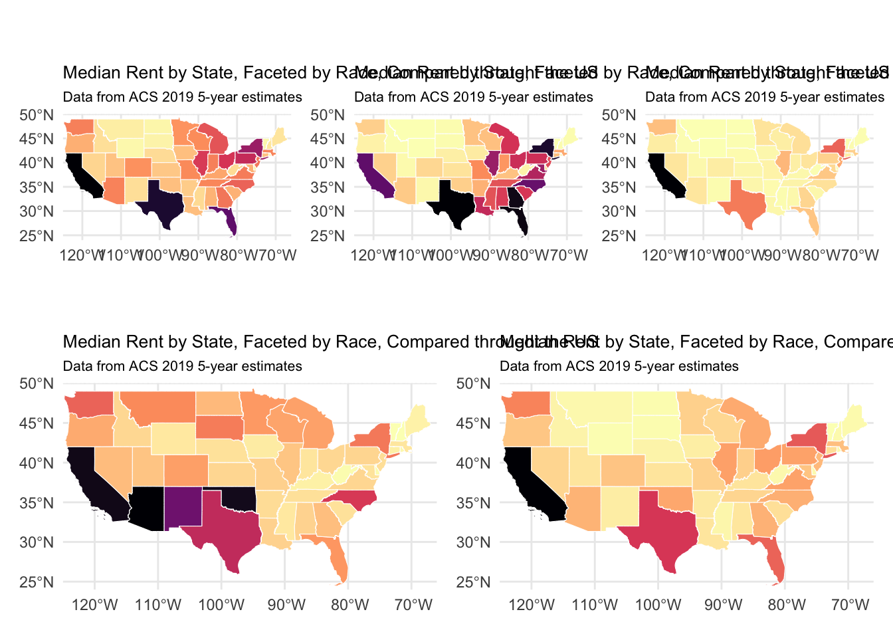
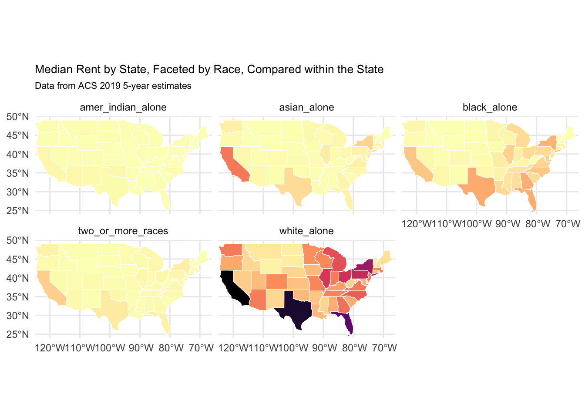

Landlords Envy Him – The Budget Whisperer!
Exploring the Tug-of-War Between Income and Rent in America
 I apologize for the oversight. Let’s ensure all your content, including all code blocks, is included correctly. Here is the complete rearrangement with all sections and code blocks intact:
I apologize for the oversight. Let’s ensure all your content, including all code blocks, is included correctly. Here is the complete rearrangement with all sections and code blocks intact:
Introduction
Imagine every year, as the calendar turns, you write a bigger check for your rent. You’re not alone. Across the country, millions are penning this annual escalation into their ledgers. But there’s another figure that’s climbing too—your income. Let’s explore this curious dance of numbers and what it means for the roof over your head.
The Dance Begins: Rising Rent
As the years roll by, the cost of renting a home has steadily increased. We’ve tracked this change using data from the IPUMS ACS, and the patterns are clear. The graph below is not just a line climbing a chart; it’s a reflection of changing lives, of budgets adjusted, and of the increasing value we place on our homes.
Trend of Median Rent Over the Years
A Sigh of Relief: Rising Income
But as rent demands more from our wallets, something else is happening. Our incomes are also on an upward trajectory. This next graph isn’t just about higher wages; it’s about the resilience and growth that have characterized our economy and personal financial stories.
Trend of Median Personal Income Over the Years

Interactive Exploration
While the national trends provide a broad picture, the real story unfolds at a more personal level. How does your city fare in this dance of rent and income? Dive into our interactive dashboard to explore detailed data for your area. Click the link here to find the city median rent of 2021 you live!
Diversity in Housing Data: A Look at Racial Representation
As we explore the dynamics of the housing market, it’s essential to recognize the diversity within the data. This graph shows the distribution of different racial groups, reflecting the varying experiences across different communities.
Distribution of Racial Groups


Bridging the Graphs: Analysis and Insights
While we’ve seen the upward trends in both rent and income through our graphs, let’s take a closer look at what these changes really mean. Our analysis goes beyond simple observation and digs into how these financial changes affect each other and what this might mean for you.
Understanding the Model’s Message
Our analysis used a special kind of mathematical model to predict how changes in income affect rent. Here’s what we found: if incomes go up by 10%, rent could increase by about 13.34% on average. This isn’t just a random guess; it’s a prediction backed by strong data, showing us how closely linked our earnings are to what we pay for housing.
Explaining the Findings in Everyday Terms
How Rent Reacts to Income: The number 0.1334 from our model tells us that rent doesn’t just increase slightly when incomes go up; it jumps by a noticeable amount. Imagine getting a 100 dollar increase in your monthly pay; this model predicts that your rent could go up by about 13.34 dollars. So, as we earn more, we also tend to spend more on rent.
Confidence in Our Model: The details behind these numbers are very reliable. The data tells us this isn’t just happening by chance—it’s a real pattern that we see repeatedly in the numbers.
Wrapping Up: What This Means for Us
As we dive deeper into the dynamics of income and rent, we uncover some intriguing patterns. Here’s what our journey through the data has revealed, told as a story that unfolds over time and across different communities.
The Elastic Dance Between Income and Rent: Imagine getting a raise at work—let’s say your income goes up by 10%. Sounds great, right? But here’s the catch: as your wallet grows thicker, so does your rent bill. In fact, our data from 2022 shows that a 10% increase in income would typically lead to about a 13.34% increase in rent. It’s like a dance where one partner follows closely behind the other, never quite catching up but always in step.
A Time-Travelling Twist: Now, let’s add a twist to our dance. Time itself plays a role in how income and rent interact. With every tick of the clock, as the days and months roll by, the dance gets more intense. Our analysis suggests that when we account for these temporal rhythms—what we call autocorrelation—a 10% hike in income might push rent up by about 14.67%. It’s a reminder that in the dance of economics, timing can amplify every move.
A Historical Perspective: Looking back from the early 2000s to 2020, we see a pattern of rising and falling. It’s like watching the hills and valleys in a scenic landscape. Rent and income seemed to climb together until they reached a peak around 2020. Then came the pandemic, a sudden storm that flattened the hills somewhat, showing us how external shocks can impact our financial dance.
Diversity in the Dance: Not everyone experiences this dance in the same way. Our exploration reveals that racial and ethnic backgrounds play a significant role in how people are affected. For instance, our Chinese and Japanese communities have shown a particularly strong link between rising incomes and increasing rents. This pattern highlights the diverse economic outcomes and challenges faced by different groups within our society.
This exploration into the numbers not only broadens our understanding but also brings us face to face with the complexities of economic life. It’s clear that as our incomes grow, so does the amount we allocate for rent, often at a pace that outstrips our earnings growth.
Learn More Yourself

